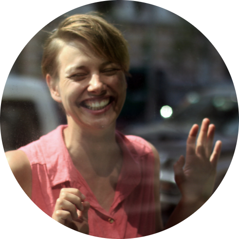

|  |
Almuth HattwichWeb Developer and Communication Coach I am a Communication Coach with a growing interest in web development. I have trained people’s voices
and communication skills in different areas. The last couple of years I worked in theatre and at
Universities in mostly Austria, Vienna. My work places include the Burgtheater, Volkstheater and the University of Music and Performing Arts in Vienna, the
Mozarteum University in Salzburg, the Landestheater Linz and Niederösterreich, the National Theatre
“Radu Stanca” in Sibiu, Romania, the Hungarian German Theatre in Szekszárd. |
| HTML | ★★★★★ |
| CSS | ★★★☆☆ |
| Time | Work |
|---|---|
| ab Febraur 2022 | Selbstständigkeit |
| seit 10/2019– 01/2022 | Stimm- und Sprechtraining am Burgtheater in Wien Arbeiten mit u.a. Johan Simons, Mateja Koležnik, Robert Icke, Martin Kušej, Tina Lanik |
| seit 09/2019 – heute | Dozentin für Sprachgestaltung,Feedback und Kommunikation der Regieklasse am Thomas Bernhard Institut, Mozarteum, Salzburg |
| seit 08/2018 – heute | Stimmtraining an der Deutschen Bühne Ungarn in Szekszárd |
| 09/2017 – 08/2020 | Sprechtrainerin am Landestheater Linz |
| 04/2016 – heute | Sprechtrainerin am Nationaltheater Radu Stanca in Sibiu, Rumänien |
| 09/2015 – 08/2017 | Dozentin für Sprechen an der Musik und Kunst Privatuniversität Wien |
| 04/2011 – 09/2016 | Dozentin für Sprachgestaltung am Max Reinhardt Seminar, Wien |
| 03/2015-08/2015 | Dozentin für Sprachgestaltung am Thomas Bernhard Institut, Mozarteum, Salzburg |
| 09/2013 – 06/2015 | Dozentin für Sprachgestaltung an der Schauspielschule Krauss, Wien |
| 10/2009 – 03/2010 | Lehrauftrag im Bereich „Softskills” an der Fachhochschule Erfurt, Schwerpunkt Präsentation |
| 11/2008 – 2010 | Trainerin für bfkm finderhut+seidel, Schwerpunkt Rhetorik und Stimmtraining, Halle/Saale (rhetorische Kommunikation) |